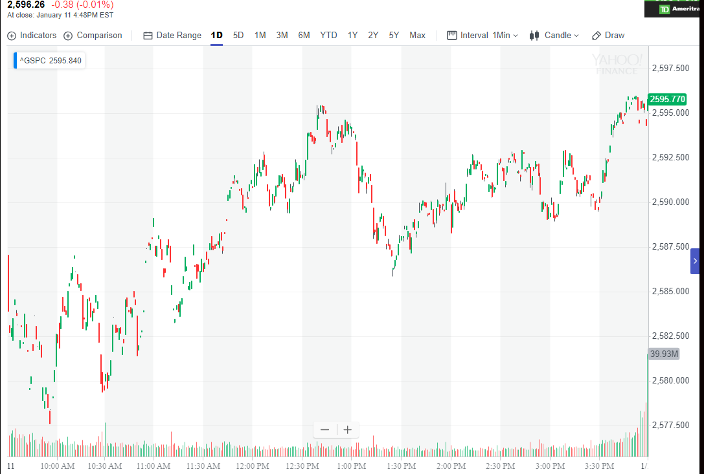
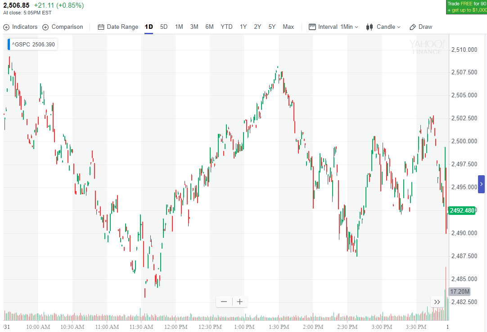

- 市场总是处于一个走势当中，不是跌势就是涨势。跌势结束后，一定是涨势，涨势结束后，一定是跌势。
- 趋势有时又有嵌套，嵌套可以有两层甚至三层。一般两层比较常用。在应用一级趋势的时候，要注意是否有更大的趋势。
这个趋势会是全天的趋势。通常会用长时间的震荡（超过2个小时）来制造趋势。
- 大部分走势都需要一个酝酿的过程。但是，一开盘就不断下跌，幅度很大是非常强的跌势，不需要设置，也不会填空。不需要理由。只要记住就好。
同样，一开盘就不断上涨的是很强的升势，不需要准备，也不会填空。不需要理由。 但是也有例外，有时候，它一开盘后连续走低或者连续冲高，是为了将来大幅反向运动。
所以这个也是很难说会如何。 要看它连续运动的形状已经运动后，的情况。
- 如果在一个主要走势中，出现快速的，幅度很大的反向走势。一般这个反向走势，只在刚刚开始启动的时候，有一些调整。然后就一路大跌或者大涨。
幅度很大。这样的走势说明，主要走势仍然没有转向。可以做完反向走势后，继续做主要走势。
各种趋势的走势
各种趋势的走势

图示：12：40出现新高后，快速从高处下跌，幅度很大。速度很快。这个说明仍然是升势。一旦结束后，可以寻找机会做多。

图示：11：40下跌趋势在小的两段走势加双底走势中结束，成为升势，
升势在1：00到1：30分的加速上升走势中结束。开始跌势。